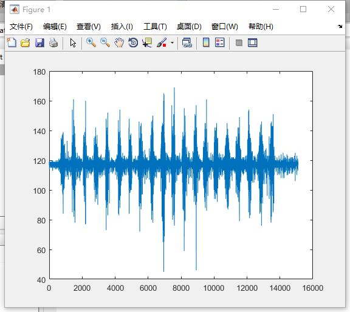

gForce sEMG Raw Data
June 22th, 2017
Some versions of gForce provides users with the ability of capturing sEMG raw data with the sEMG Raw Data Capture Utility or sEMG Raw Data Capture SDK.
sEMG raw data is usually used in medical researching or for the developers that want to build their own gesture recognition algorithm.
If you need such a special version of gForce, please query info@oymotion.com.
Data Format
The sEMG raw data, which is captured either into files by the sEMG Raw Data Capture Utility or by developer's own application built upon the sEMG Raw Data SDK, consists of a series of 140-byte packages, each of which consists of 2-byte (0x8192) magic number, 1-byte CRC, 1-byte package id, 128-byte of 16 groups of 8-channel interleaved sample data and 8-byte time-stamp.
More about 8-Channel Sample Data
It is 1 byte per channel per sample, and the output votage is 0-2.5v, and amplifier is 800x, therefore, the input vatage of the orignal sEMG is:
$$\mathcal{In} = 1.25 \frac{(\mathcal{Out}-128)}{128 \times 800}$$
Plotting in Matlab
The following are a bunch of commands to read captured raw data file
rawdata.hex and plot the channel 0 in Matlab:
>> fp=fopen('rawdata.hex', 'r', 'l');
>> file_data=fread(fp,'uchar','l');
>> data=[];
>> for i=1:140:length(file_data)
>> data=[data file_data([i+4:i+131])];
>> end
>> data_2d=reshape(data, 8, []);
>> figure;
>> plot(data_2d(1,:));
It must be noted that Matlab uses 1-based array index!
You will be able to see the plotted figure like the following:

If you want to plot channel 7 instead, just replace the last command with:
>> plot(data_2d(8,:));
Filter for sEMG
- sEMG Filters Library Provides some basic filter functions for sEMG digital signals.